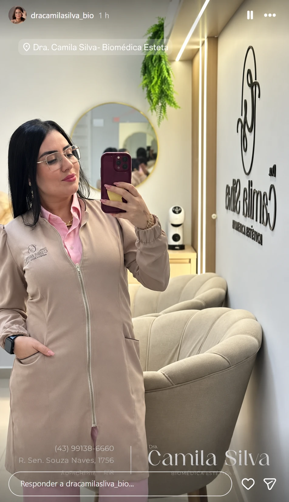

Conte o que busca
Compartilhe seus objetivos e dúvidas na solicitação de avaliação.
Planejamento estético com foco em naturalidade. Um olhar individual para cuidar de você, respeitando o que faz sua beleza ser única.
Explore as áreas de atendimento.
A escolha do procedimento começa com uma avaliação individual.
Cuidados voltados aos traços e à expressão, com planejamento que considera as características de cada rosto.
Quero conversar sobre estética facialDra. Camila Silva
Biomédica esteta em Londrina
Com atuação em estética facial, regeneração da pele, cuidados corporais e capilares, Camila apresenta um trabalho centrado no planejamento estético e na naturalidade.
A avaliação é o espaço para conversar sobre seus objetivos, esclarecer dúvidas e entender quais cuidados fazem sentido para você.
Conheça também pelo InstagramCompartilhe seus objetivos e dúvidas na solicitação de avaliação.
Converse pelo WhatsApp para consultar a disponibilidade e combinar um horário.
Durante a avaliação, entenda as opções, os cuidados e o planejamento indicado para você.
Conheça o consultório da Dra. Camila Silva e venha conversar sobre o seu cuidado.
Rua Senador Souza Naves, 1756
Jardim Londrilar · Londrina, PR
CEP 86015-430

UM REGISTRO DO CONSULTÓRIOPreencha seu nome e a área de interesse abaixo ou entre em contato diretamente pelo WhatsApp. A disponibilidade e o horário serão combinados na conversa.
Você pode começar contando o que gostaria de cuidar. A escolha de um procedimento depende de avaliação profissional individual.
Sim. Explore as áreas de atendimento no site e envie suas dúvidas pelo WhatsApp para receber mais informações.
Na Rua Senador Souza Naves, 1756, Jardim Londrilar, em Londrina. O botão “Como chegar” abre a localização no Google Maps.
O formulário prepara sua mensagem para o WhatsApp. É preciso enviá-la e combinar o horário com o atendimento para confirmar a avaliação.
Conte o que gostaria de cuidar.
A conversa continua pelo WhatsApp.